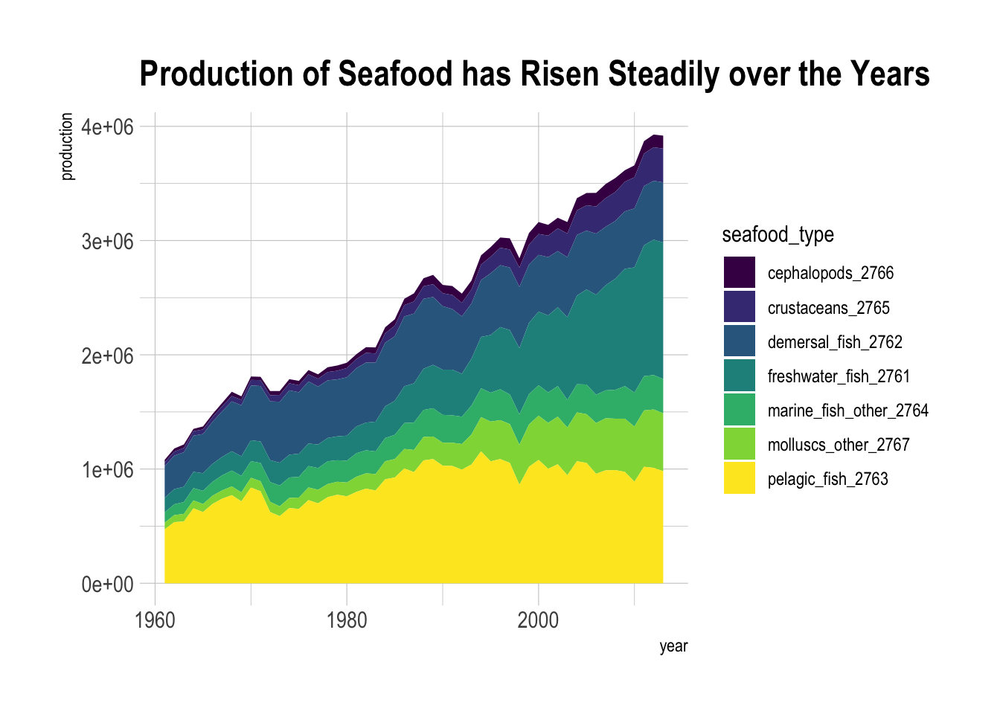

For Tidy Tuesday, this week I decided to tackle a relatively easy question this week by understanding seafood production over the years. Since I am a big octopus fan. Which countries were responsible for the top production of cephalopods over the years?
Rows: 11657 Columns: 4
── Column specification ────────────────────────────────────────────────────────
Delimiter: ","
chr (2): Entity, Code
dbl (2): Year, Aquaculture production (metric tons)
ℹ Use `spec()` to retrieve the full column specification for this data.
ℹ Specify the column types or set `show_col_types = FALSE` to quiet this message.
Rows: 11028 Columns: 4
── Column specification ────────────────────────────────────────────────────────
Delimiter: ","
chr (2): Entity, Code
dbl (2): Year, Fish, Seafood- Food supply quantity (kg/capita/yr) (FAO, 2020)
ℹ Use `spec()` to retrieve the full column specification for this data.
ℹ Specify the column types or set `show_col_types = FALSE` to quiet this message.
production <- readr::read_csv('https://raw.githubusercontent.com/rfordatascience/tidytuesday/master/data/2021/2021-10-12/seafood-and-fish-production-thousand-tonnes.csv')
Rows: 10326 Columns: 10
── Column specification ────────────────────────────────────────────────────────
Delimiter: ","
chr (2): Entity, Code
dbl (8): Year, Commodity Balances - Livestock and Fish Primary Equivalent - ...
ℹ Use `spec()` to retrieve the full column specification for this data.
ℹ Specify the column types or set `show_col_types = FALSE` to quiet this message.
production <- janitor::clean_names(production)skimr::skim(production)
I’ll pivot the production data frame to a longer one using pivot_longer().
production_long <- production %>% tidyr::pivot_longer(cols=contains("_"), names_to ="seafood_type",values_to ="production")head(production_long)
# A tibble: 6 × 5
entity code year seafood_type production
<chr> <chr> <dbl> <chr> <dbl>
1 Afghanistan AFG 1961 pelagic_fish_2763 NA
2 Afghanistan AFG 1961 crustaceans_2765 NA
3 Afghanistan AFG 1961 cephalopods_2766 NA
4 Afghanistan AFG 1961 demersal_fish_2762 NA
5 Afghanistan AFG 1961 freshwater_fish_2761 300
6 Afghanistan AFG 1961 molluscs_other_2767 NA
Now we have the long form data frame, we can now ask some interesting time questions and compare across categories. As you can see below, total seafood production has risen steadily over the years.
production_long %>%group_by(year, seafood_type) %>%summarize(production =mean(production, na.rm=TRUE)) %>%ggplot() +aes(x=year, y=production, fill=seafood_type) +geom_area() + viridis::scale_fill_viridis(discrete=TRUE) + hrbrthemes::theme_ipsum() +ggtitle("Production of Seafood has Risen Steadily over the Years")
`summarise()` has grouped output by 'year'. You can override using the `.groups`
argument.

Drilling into the cephalpods, I’m interested in percent production of the total for the top 10 producing countries.
Interesting that Japan’s share of production has decreased steadily, and that China is a leading producer lately.